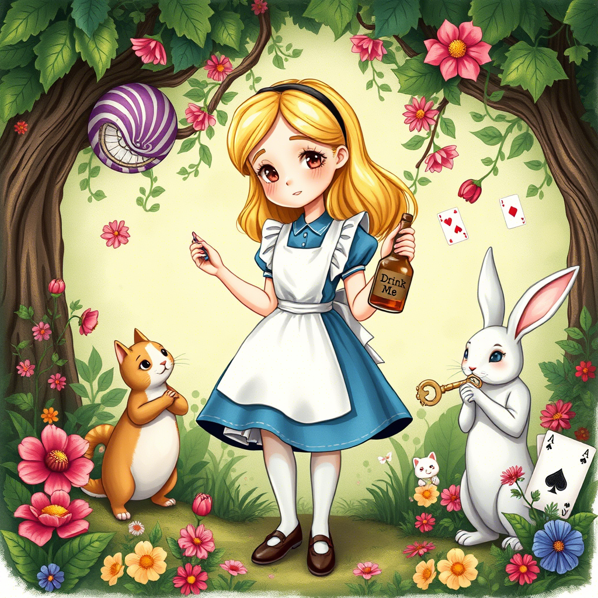
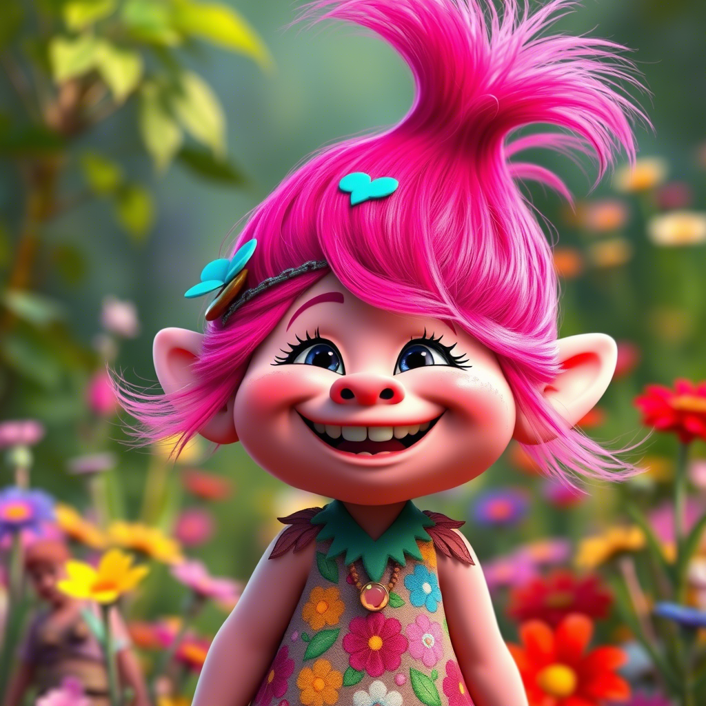
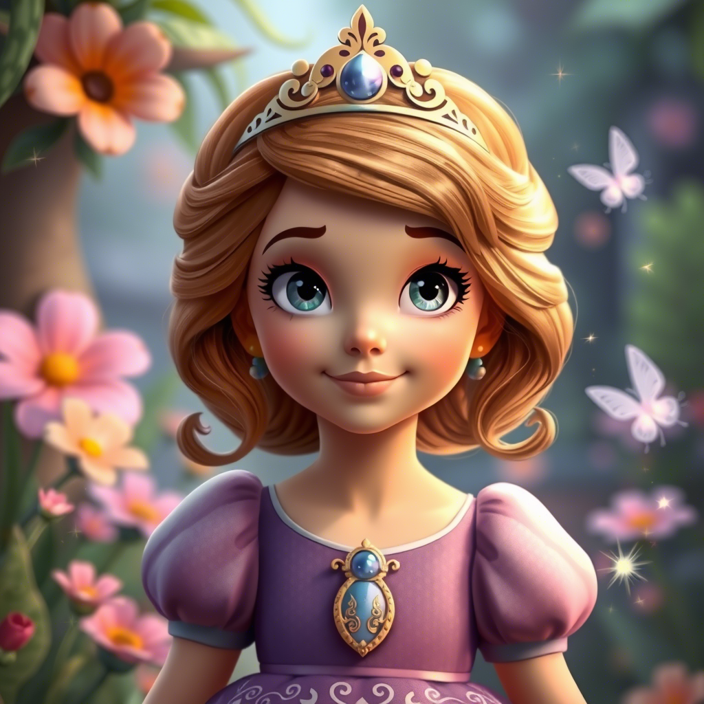
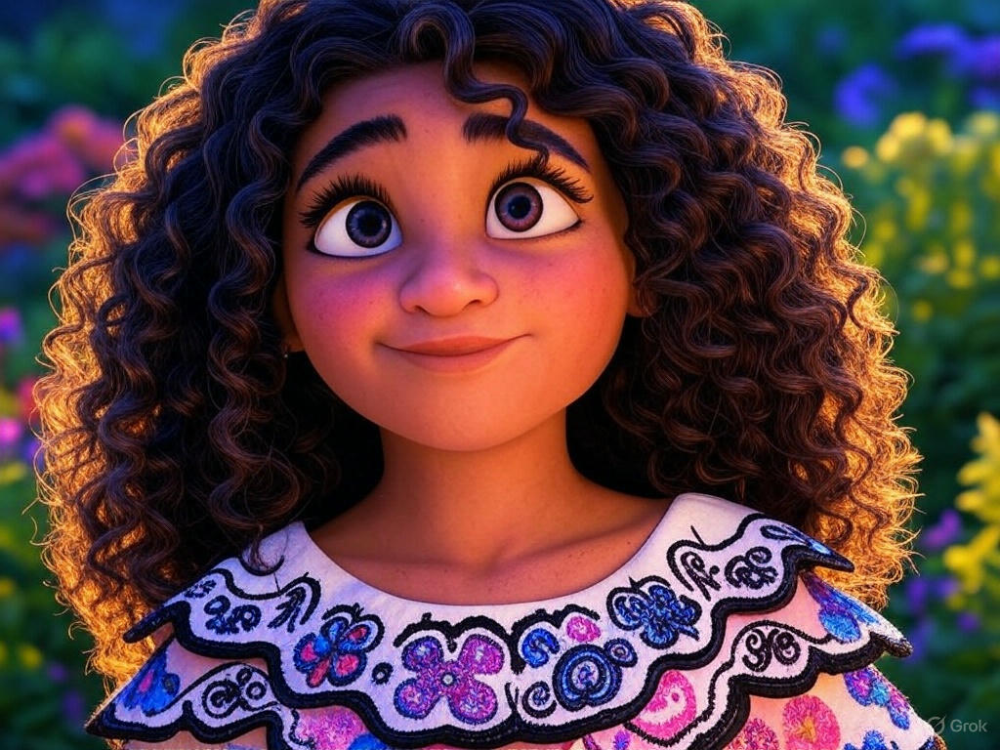
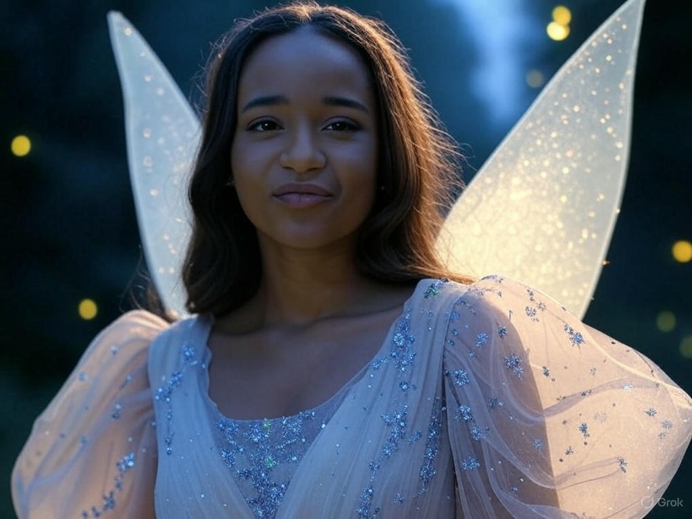
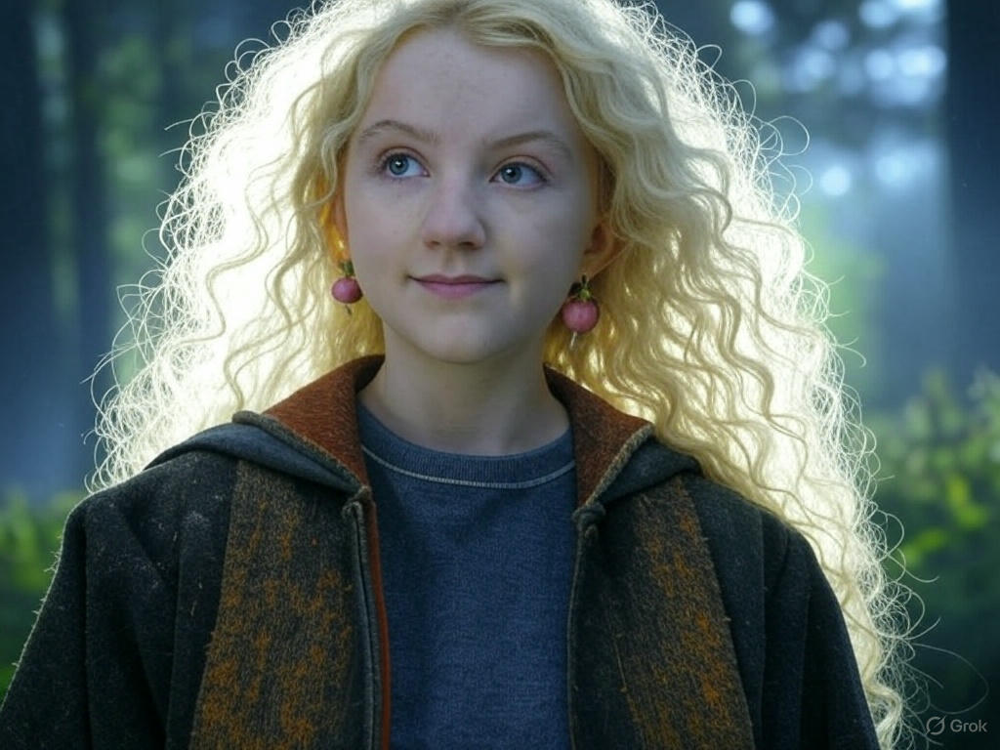
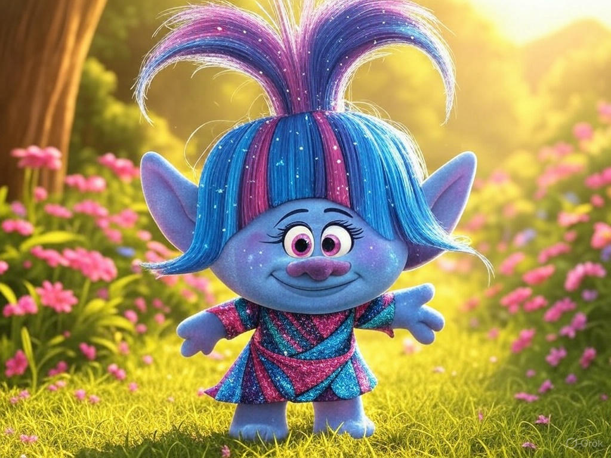

Алиса (Алиса в стране чудес) — фантазерка с нестандартным взглядом на мир, любит искать необычные решения.

Брозочка (Тролли) — яркая, творческая, всегда заряжает окружающих позитивом.
 Флора (из мультфильма Клуб Винкс) — фея природы, нежная, но с яркой творческой искрой, создает красоту вокруг себя.
Флора (из мультфильма Клуб Винкс) — фея природы, нежная, но с яркой творческой искрой, создает красоту вокруг себя.

София Прекрасная (София Прекрасная) — любопытная, добрая, креативная принцесса, умеющая вдохновлять.

Мирабель (Энканто) — самая необычная из семьи, но именно она объединяет всех и дарит вдохновение.
 Арель (Русалочка) — творческая мечтательница, которая не боится следовать за своей мечтой и менять мир вокруг себя.
Арель (Русалочка) — творческая мечтательница, которая не боится следовать за своей мечтой и менять мир вокруг себя.

Кристина (Кристалка) (Сказочный патруль) — фея творчества, генератор идей и красоты.

Луна Лавгуд (из анимации по Гарри Поттеру или фан-версий) — творческая мечтательница с нестандартным мышлением.
 Ванилопа фон Кекс (Ральф) — дерзкая и яркая, но при этом очень душевная и креативная.
Ванилопа фон Кекс (Ральф) — дерзкая и яркая, но при этом очень душевная и креативная.

Тролль Блестяшка (Тролли) — олицетворение яркости и нестандартного креатива.